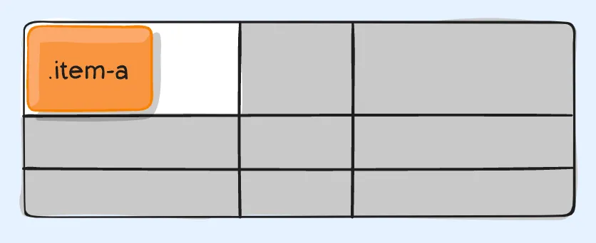

02 – Grundlæggende Web

Løsning
I tema 02 blev vi introduceret til grundlæggende kodning og udarbejdede en
studiestartsprøve
bestående af fem HTML-sider
med tilhørende CSS-filer.
Forløbet fokuserede på opsætning og
anvendelse af HTML og CSS,
håndtering af domæner samt
filoverførsel via FileZilla.
Opgavens mål var at udvikle et
responsivt website, der var
optimeret til både desktop- og mobilvisning
Klik her for at se min
løsning →

Læringsproces
I forbindelse med studiestartsprøven var forløbet centreret omkring opbygning af strukturer samt
samspillet mellem design og matematik.
Jeg opnåede en dybere forståelse af, hvordan
websteder konstrueres fra
bunden ved hjælp af HTML, og
hvordan de efterfølgende designes og tilpasses i CSS.
Forløbet omfattede blandt andet
anvendelsen af grid og
flex-strukturer samt implementering af media
queries for at sikre responsive layouts til både mobil-
og
desktopformater.
